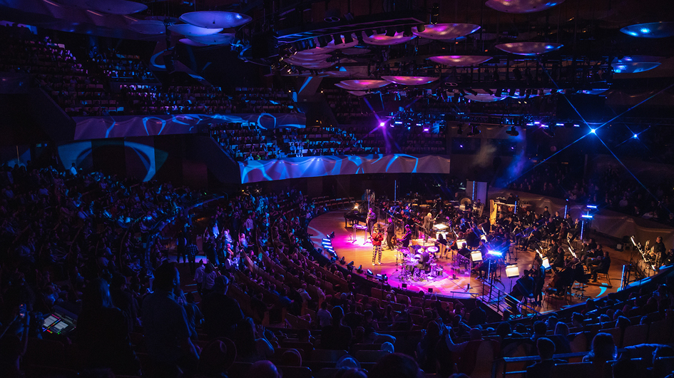
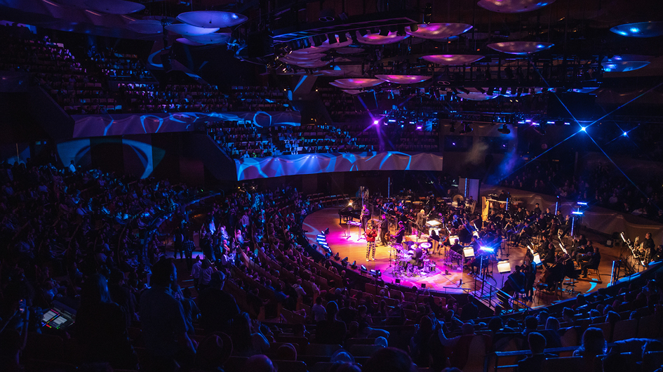

Colorado Symphony Classics 2022-2023
Our 2022/23 Season promises to be an imaginative and spectacular journey through some of the best music ever composed.
We’re delighted to present to you a season brimming with extraordinary talent and exciting repertoire that we hope will ignite your imagination. The Colorado Symphony is committed to bringing the best in live, symphonic music to an eclectic and ever-growing audience, and we’re well positioned to embark on an exciting path forward in the years to come.
Numbers
Vivaldi's The Four Seasons
OCT14-16 FRI-SAT 7:30 SUN 1:00
Symphonic bliss awaits you as your Colorado Symphony and guest conductor Aram Demirjian present a powerhouse program highlighted by Vivaldi’s programmatic masterpiece, The Four Seasons. As striking and admired as ever, this work conjures imagery that deftly captures the essence of spring, summer, autumn, and winter through music that manages to remain strikingly modern three centuries after its debut. Paul Huang is just the virtuoso to embrace this beloved concerto in its return to Boettcher Concert Hall. The grand finale — Tchaikovsky’s Fourth Symphony — is a meticulously structured meditation on fate that endures as one of his most popular and identifiable compositions. Over four movements, Tchaikovsky transforms his personal battle with fate into one of humanity’s most powerful works of art. Among today’s best and brightest composers, Jessie Montgomery’s Strum draws on the spirit of dance, movement, and American folk expressions in an ecstatic celebration that will have you on the edge of your seat.
Featured Artists: Aram Demirjian, conductor Paul Huang, violin
Repertoire: JESSIE MONTGOMERY Strum VIVALDI The Four Seasons, Op. 8, No. 1-4 TCHAIKOVSKY Symphony No. 4 in F minor, Op. 36